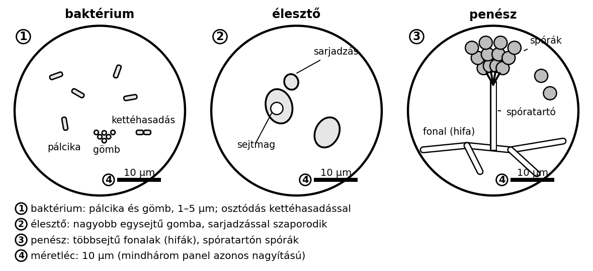
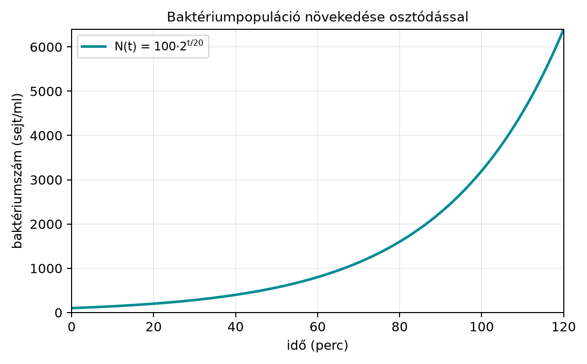

Képzeld el, hogy reggel friss tejszínkrémet készítesz, de egyetlen doboz krém a pulton maradt, hűtés nélkül. Este a krém savanyú szagú, folyósabb, és kis buborékok jelennek meg a felületén. Másnap ugyanezt a krémet már senki sem tehetné ki eladásra. Mi történt? Nem „romlott el magától”, hanem mikroszkopikus méretű élőlények – elsősorban baktériumok, élesztők – szaporodtak el benne. Ahhoz, hogy megértsd, miért kell a krémes süteményeket hűtve tárolni, miért tartós a jól főzött lekvár, és miért fontos a kézmosás, ismerned kell ezeknek a mikrobáknak a csoportjait, életfeltételeit és szaporodását.
Egy csepp nem megfelelően hűtött tejszínkrémben több millió baktérium is lehet, bár szabad szemmel semmit sem látsz. Ha egyetlen baktérium 20 percenként osztódik, és az osztódások zavartalanul folytatódnak, akkor 4 óra alatt egyetlen sejtből több mint négyezer, 8 óra alatt pedig több mint 16 millió utód keletkezhet. Ez a fajta növekedés a kulcsa annak, hogy a friss, cukros, nedves, meleg környezetben lévő töltelékek nagyon gyorsan romlásnak indulnak.
Definíció. A mikroorganizmus olyan, szabad szemmel nem látható, mikroszkóppal megfigyelhető élőlény, amely egyetlen sejtből állhat (baktérium, élesztő, egyes penészek), vagy sejtes szerkezet nélküli részecske (vírus). Az élelmiszer-biztonságban elsősorban a baktériumok, az élesztők, a penészek és a vírusok számítanak.
Baktériumok. A baktériumok egysejtű, sejtfallal rendelkező, osztódással szaporodó élőlények. Igen kicsik, jellemző hosszuk 1–5 mikrométer (1 µm = 1 mm ezredrésze). Alakjuk szerint lehetnek gömb, pálca vagy csavart formájúak. A cukrászatban a pálcika alakú tejsavbaktériumok savanyítják a tejszínt és a krémet, a gömb alakú Staphylococcus aureus okozhat hőkezelés nélküli, kézzel szennyezett krémekben ételmérgezést. Fontos tulajdonságuk, hogy egyes fajaik kedvezőtlen körülmények között spórát képeznek. A spóra nem szaporodó, rendkívül ellenálló képlet, amely kibírja a főzést és a kiszáradást is. Amikor a körülmények kedvezővé válnak, a spórából újra aktív, szaporodó baktérium fejlődik.
Élesztők. Az élesztők a baktériumoknál nagyobb, egysejtű gombák. A cukrásztechnológia szempontjából a legismertebb a sütőélesztő (Saccharomyces cerevisiae), amely cukorból szén-dioxidot és alkoholt termel, ez lazítja az élesztős tésztát. Ugyanakkor vannak káros élesztők is, például az ozmofil élesztők, amelyek magas cukortartalmú környezetben is szaporodnak, és a fondán felületén, a szirupokban vagy a rosszul záródó lekvárokban felületi erjedést okoznak.
Penészek. A penészek többsejtű, fonalas gombák. Spóráik a levegőben szállnak, és a felületre kerülve kedvező körülmények között kihajtanak. A penészek gyakran színes bevonatot képeznek (zöld, kék, fekete, fehér), és egyes fajaik mikotoxinokat termelhetnek, amelyek mérgező anyagok. A cukrászatban a penész romlás jellemzően a szárazabb, savasabb felületen – például gyümölcskenyér, száraz teasütemény, felbontott lekvár – jelenik meg.
Vírusok. A vírusok nem sejtes élőlények, csak örökítőanyagot és fehérjeburkot tartalmaznak, és önállóan nem tudnak szaporodni, mert ehhez gazdasejtre van szükségük. Élelmiszerrel is terjedhetnek, leggyakrabban fertőzött dolgozó kezéről, szennyezett vízből vagy nyersanyagból. A cukrászatban a norovírus és a hepatitis A vírus fontos, mert szennyezett élelmiszerrel (például kézzel adagolt, hőkezelés nélküli desszerttel) átvihetők, és hányást, hasmenést, májgyulladást okozhatnak. A vírusok nem szaporodnak az élelmiszerben, de az élelmiszer közvetítő szerepet tölt be.

A három panel azonos nagyítású, a 10 µm-es méretléc mindegyiken ugyanakkora. A baktériumok (1) a legkisebbek: pálcika és gömb alakúak, és kettéhasadással osztódnak. Az élesztősejt (2) többszörösen nagyobb, és sarjadzik: a sejtből kis bimbó nő ki. A penész (3) többsejtű fonalakból (hifákból) áll, a felálló spóratartón láncokban ülnek a spórák, amelyek a levegőbe jutva továbbterjednek. (A méretek szemléltető, kerekített értékek.)
Az alábbi táblázat összefoglalja a fő csoportok jellemzőit.
| Csoport | Sejt típusa | Szaporodás | Cukrászati jelentőség |
|---|---|---|---|
| Baktérium | egysejtű, sejtfallal | osztódás | romlás, ételmérgezés, tejsavtermelés |
| Élesztő | egysejtű gomba | sarjadzás, osztódás | élesztős tészta lazítása, cukros termékek erjedése |
| Penész | fonalas gomba | spórákból kihajtás | felületi romlás, mikotoxin-termelés |
| Vírus | nem sejtes | csak gazdasejtben | fertőzés közvetítése, élelmiszerrel terjedés |
Ahhoz, hogy a mikroorganizmusok szaporodni tudjanak, hat feltételnek kell együttesen teljesülnie. Ha egy feltétel hiányzik vagy kedvezőtlen, a szaporodás lelassul vagy leáll.
Tápanyag. A mikrobáknak vízre, szénhidrátra, fehérjére, zsírra, ásványi anyagokra és vitaminokra van szükségük. A cukrászati termékek – tojás, tej, tejszín, vaj, liszt, cukor, gyümölcs – általában bőséges tápanyagot tartalmaznak, ezért a mikrobák szempontjából kedvező környezetet jelentenek.
Hőmérséklet. Minden mikroorganizmusnak van egy minimális, optimális és maximális hőmérséklete. A legtöbb élelmiszer-eredetű kórokozó baktérium a testhőmérséklet közelében, 30–40 °C között szaporodik a leggyorsabban. A gyakorlatban a veszélyes hőmérséklet-tartomány tanulási értékként a kb. 5–63 °C közötti sáv, amelyben a romlást okozó baktériumok és egyes kórokozók aktívan szaporodnak (ellenőrizendő: hatályos NÉBIH-útmutató és Magyar Élelmiszerkönyv a pontos értékről; a források 4–60 °C-ot is használnak). A könyv egységesen ezt a tanulási értéket használja: veszélyes zóna kb. 5–63 °C, hűtött tárolás 0–5 °C között (5 °C alatt), melegen tartás 63 °C fölött. Ezért a krémes, tejszínes termékeket legfeljebb rövid ideig szabad szobahőmérsékleten tartani, és a készterméket hűtve (0–5 °C között) kell tárolni.
Vízaktivitás. A mikroorganizmusoknak szabad, felhasználható vízre van szükségük. A vízaktivitás () azt mutatja meg, hogy az élelmiszerben lévő víz mekkora hányada hasznosítható a mikrobák számára. A tiszta víz vízaktivitása . Ha az élelmiszerhez sok cukrot vagy sót adunk, az megköti a vizet, így a vízaktivitás csökken. A legtöbb kórokozó baktérium szaporodása alatt erősen lelassul; a Staphylococcus aureus azonban kb. -ig is szaporodhat, alatt a kórokozó baktériumok általában nem szaporodnak, a penészek és az ozmofil élesztők viszont még alatt is (ellenőrizendő: mikrobiológiai szakkönyvi érték). A jól főzött, magas cukortartalmú lekvár vízaktivitása alacsony, ezért tartós. A fondán és a tömény cukorkészítmény is alacsony vízaktivitású. Ezzel szemben a tejszínkrém és a tojáskrém vízaktivitása magas, ezért romlandó. Ezt a fogalmat a A tartósítás elve és módszerei alfejezetben részletesen használjuk.
pH (savasság). A mikroorganizmusok többsége a semlegeshez közeli pH-t kedveli (pH 6–7). A tejszín, tojás, húsleves ilyen környezet. A savanyú közeg (pH 4,5 alatt) gátolja a legtöbb kórokozó baktériumot, ezért a citromlével vagy ecettel savanyított krémek, gyümölcszselék valamivel biztonságosabbak, de a savanyú környezetben még mindig szaporodhatnak élesztők és penészek.
Oxigén. A mikrobák oxigénigénye szerint megkülönböztetünk aerob (oxigént igénylő), anaerob (oxigéntől károsodó) és fakultatív anaerob (oxigénnel és anélkül is szaporodó) mikroorganizmusokat. A penészek és a legtöbb élesztő aerob. A baktériumok között vannak anaerob fajok is, például a Clostridium botulinum spórája légmentesen csomagolt, nem eléggé savas termékben csírázhat ki (ellenőrizendő: konzerválási feltételek). A cukrászatban a légmentes csomagolás inkább az oxidatív romlást gátolja, de bizonyos mikrobák túlélését nem akadályozza meg.
Idő. A szaporodás mindig időfüggő. Ha a többi feltétel kedvező, a baktériumok száma eleinte lassan, majd egyre gyorsabban nő. Ezért a hűtésen kívül a rövid tárolási idő is alapvető védelmi eszköz. A HACCP-rendszerben a készétel készítésétől a tálalásig eltelt időt és hőmérsékletet rendszeresen dokumentálni kell.
Definíció. A generációs idő az az időtartam, amely alatt egy baktériumsejt osztódással két utódsejtre válik szét. A generációs idő fajtól és körülményektől függ, kedvező környezetben egyes baktériumoknál 15–30 perc is lehet. A szaporodási görbe a mikrobapopuláció létszámának időbeli változását ábrázolja.
A tipikus szaporodási görbének négy szakasza van:

A diagramon a felfutó görbe mutatja, hogy a 20 percenként duplázódó baktériumpopuláció 2 óra (6 generáció) alatt a kezdeti 100-ról 6400-ra, azaz 64-szeresére nő. A valóságban a görbe a tápanyag fogytával ellaposodik, ahogy a fenti négy szakasz leírja. Az ábra adatait a következő számítási példák használják.
A baktériumok osztódásos szaporodása matematikailag egyszerű modell. Ha a kezdeti sejtszám, a generációk száma, akkor az generáció utáni sejtszám:
A generációk száma az eltelt idő () és a generációs idő () hányadosa:
Számítás. Egy frissen készített krémben ml-en baktériumsejt van. A krém 60 percig szobahőmérsékleten áll, a baktérium generációs ideje 30 perc. Hány baktérium lesz 1 ml-ben 60 perc után?
Adott: , , . Keresett: .
Képlet: ; .
Ellenőrzés: 30 perc után 200, újabb 30 perc után 400, tehát az eredmény reális. Ha a hőmérsékletet hűtőhőmérsékletre (0–5 °C) csökkentjük, a generációs idő jelentősen megnő, a legtöbb kórokozó szaporodása erősen lelassul; egyes hidegtűrő baktériumok (pl. Listeria monocytogenes) azonban hűtőben is lassan szaporodnak, ezért a hűtött krémes terméknek is rövid, meghatározott eltarthatósága van (ellenőrizendő: NÉBIH-útmutató, 2073/2005/EK).
Számítás. Hány baktérium keletkezik 6 óra alatt, ha egyetlen baktérium 20 percenként osztódik, és a környezet mindvégig kedvező?
Adott: , , . Keresett: .
Képlet: ; .
Ellenőrzés: , . Ez jól mutatja, hogy a mikrobák száma miért válik érzékszervileg észrevehetővé néhány óra alatt. A valóságban a tápanyag és a méreganyagok miatt a növekedés nem marad ilyen gyors, de a veszélyes szint hamar elérhető.
A cukor kettős szerepet játszik. Egyrészt kiváló tápanyag az élesztők és egyes baktériumok számára, másrészt nagy mennyiségben hozzáadva megköti a vizet, csökkenti a vízaktivitást, és ezzel gátolja a legtöbb mikrobát.
A hagyományos, jól főzött lekvár cukortartalma magas, vízaktivitása alacsony (jellemzően körüli, ellenőrizendő: gyümölcstartósítási útmutató). A baktériumok nem szaporodnak benne, de a penészek és ozmofil élesztők lassan növekedhetnek a felületén, ha a lekvár nincs megfelelően zárva vagy nem hűtött. A fondán és a tömény cukorkészítmények még alacsonyabb vízaktivitásúak, ezért szobahőmérsékleten hónapokig eltarthatók.
Ezzel szemben a tejszínkrém (tejszín, cukor, esetleg tojás) vízaktivitása magas, pH-ja közel semleges, tápanyagban gazdag, ezért hűtés nélkül néhány óra alatt is elszaporodhatnak benne a baktériumok, például a Staphylococcus aureus vagy a romlást okozó tejsavbaktériumok. A krémes, tejszínes termékeket ezért mindig hűtve (0–5 °C között) kell tárolni, és szigorúan korlátozni kell a szobahőmérsékleten eltöltött időt (ellenőrizendő: hatályos higiéniai útmutató).
Jogszabály. Az élelmiszer-higiéniáról szóló 852/2004/EK rendelet előírja, hogy az élelmiszer-vállalkozónak olyan hőmérsékleti és időbeli viszonyokat kell fenntartania, amelyek megakadályozzák a kórokozók elszaporodását, és dokumentálnia kell a kritikus szabályozási pontokat (ellenőrizendő: rendelet konkrét melléklete). A hűtést és a melegen tartást a hatályos útmutatók szerinti értékekkel kell biztosítani; a könyv tanulási értéke 0–5 °C hűtve, 63 °C fölött melegen tartva (ellenőrizendő: hatályos NÉBIH-útmutató/Magyar Élelmiszerkönyv pontos értékei). A fenti szaporodási modellek segítenek megérteni, miért nem lehet a krémes terméket hosszabb ideig 20–30 °C-on tartani.
A mikrobiológiai minőség ellenőrzése a cukrászüzemben elsősorban nem laboratóriumi vizsgálattal történik, hanem a technológiai fegyelem betartásával. Az üzemben figyeljük:
A termék érzékszervi ellenőrzésekor romlásra utalhat a savanyú szag, a folyósodás, a gázbuborék, a penészfolt, a színváltozás. Az ilyen terméket selejtezni kell, és meg kell keresni az okot (idő, hőmérséklet, keresztszennyeződés).
Hiba: a krémes süteményt hosszabb ideig a pulton tárolják
hűtés nélkül.
Tünet: a krém este már savanyú szagú, folyós, gázbuborékos.
Ok: a termék hosszabb időt töltött az 5–63 °C veszélyes zónában, így a
tejsavbaktériumok és kórokozók felszaporodtak.
Megelőzés: a krémes terméket mindig hűtőben tároljuk, és a tálalást úgy
szervezzük, hogy a kint tartózkodási idő rövid legyen. Javítás: az ilyen
terméket selejtezni kell, nem szabad visszahűteni és újra kitenni.
Hiba: a felbontott lekvár tetején penészfolt jelenik
meg.
Tünet: a lekvár felszínén zöldes-fehér bevonat látható, kellemetlen
dohos szag érezhető.
Ok: a lekvár felülete érintkezett a levegővel, a penészspórák
kihajtottak; a termék vízaktivitása ugyan alacsony, de a penészek ezt is
elviselik.
Megelőzés: a felbontott lekvárt hűtőben tároljuk, a tetejét szorosan
zárjuk, és ne használjunk szennyezett, nyállal érintkező kanalat.
Javítás: a penészes réteget nem elég lekanalazni, mert a fonálszerű
hifák mélyebbre is behatolnak – a penészes lekvárt selejtezni kell.
Hiba: a fondán felületén vékony, erjedt szagú réteg
képződik.
Tünet: a fondán felülete nedves, alkoholos-gyümölcsös szagú, íze
kellemetlen.
Ok: ozmofil élesztők szaporodtak el, amelyek a magas cukortartalmat is
elviselik.
Megelőzés: a fondánt légmentesen, hűvös, száraz helyen tároljuk, és a
készterméket ne tartsuk párás, meleg környezetben. Javítás: az erjedt
szagú fondánt selejtezni kell; a felületi réteg eltávolítása nem elég,
mert az élesztősejtek a teljes tömegben jelen lehetnek. A selejtezést
dokumentáljuk, és a tárolási körülményeket (zárás, páratartalom,
hőmérséklet) felülvizsgáljuk.
Egy cukrászüzemben nyáron, esküvői torta készítésekor a munkatárs a tejszínes krémmel töltött tortát a hűtőből kivéve 45 percig állni hagyta a konyhapulton, mert közben más feladatot végzett. A konyhában 28 °C volt. A torta érzékszervileg még kifogástalannak tűnt, de az üzletvezető a HACCP-napló ellenőrzésekor látta, hogy a kritikus határ (pl. legfeljebb 30 perc hűtés nélkül; ellenőrizendő: üzemi HACCP-terv) sérült, ezért a tortát selejtezték, és új tortát készítettek. A tanulság: a kórokozók felszaporodása érzékszervileg nem ismerhető fel, ezért a kritikus határ túllépése önmagában selejtezési ok; a terméket nem lehetett felelősen kiadni. A helyesbítő tevékenység az volt, hogy a munkatársat újra oktatták a hűtési lánc fontosságáról, és ellenőrző listát vezettek be a krémes termékek kint tartózkodási idejére (ellenőrizendő: üzemi belső szabályzat).
Válaszolj röviden, majd ellenőrizd a Megoldások szakaszban.
1. feladat (A). Sorold fel a mikroorganizmusok négy fő csoportját, és mindegyikhez írj egy példát arra, milyen szerepet tölthet be a cukrászatban.
2. feladat (A). Határozd meg a generációs idő fogalmát! Miért nő gyorsabban a baktériumszám kedvező hőmérsékleten?
3. feladat (B). Egy krémben 500 baktérium van 1 ml-en. A generációs idő 20 perc. Mennyi baktérium lesz 2 óra múlva? Add meg a számítást lépésenként.
4. feladat (B). Egy hűtőszekrényben a baktériumok generációs ideje 6 óra. Hány baktérium lesz 2 nap alatt 1 kiindulási sejtből, ha nem akadályozza más tényező? (A számítást egyszerűsítve, kerekítve végezd el.)
5. feladat (C). Egy tejszínkrémet 4 órán át szobahőmérsékleten tartottak, közben a baktériumok száma 200-ról 12 800-ra nőtt 1 ml-en. Becsüld meg a generációs időt! Mennyi idő alatt érte volna el a 100 000-es szintet, ha továbbra is ugyanúgy szaporodik?
6. feladat (D). Tölts ki egy rövid HACCP jellegű ellenőrző kártyát a krémes termék tárolására: nevezd meg a kritikus határt (hőmérséklet, idő), a monitorozás módját, a helyesbítő tevékenységet és a dokumentálást.
1. feladat.
- Baktériumok: tejsavbaktériumok a tejtermékek savanyításában; kórokozó
Staphylococcus aureus a kézzel szennyezett krémekben. -
Élesztők: sütőélesztő az élesztős tészták lazításához; ozmofil élesztő a
fondán romlásához. - Penészek: penészspórák a lekvár és gyümölcskenyér
felületén; mikotoxint termelő fajok. - Vírusok: norovírus a fertőzött
dolgozó kezéről a desszertre kerülve; hepatitis A vírus hasonlóan
terjed.
2. feladat. A generációs idő az az idő, amely alatt a baktériumpopuláció megduplázódik. Az optimális hőmérsékleten az anyagcsere-folyamatok gyorsabbak, így az osztódás gyakorisága nő, ezért a generációs idő rövid.
3. feladat.
Adott:
,
,
.
generáció.
baktérium/ml.
Ellenőrzés: a populáció 2 óra alatt 64-szeresére nő, ami a 500-ból
valóban 32,000.
4. feladat.
Adott:
,
,
.
generáció.
baktérium.
Megjegyzés: hideg környezetben a szaporodás nagyon lelassul, a
generációs idő akár napokban is mérhető, ezért a hűtés hatékony.
5. feladat.
Adott:
,
,
.
A hányados:
,
tehát
generáció volt 240 perc alatt.
Generációs idő:
perc.
Ha a cél
,
akkor
.
Keresett
:
,
logaritmus nélkül becsülve:
(ez 51,200),
(ez 102,400). Tehát 9 generáció szükséges, ami
perc = 6 óra.
Gyakorlati kerekítéssel: 6 óra alatt éri el a 100 000-et, feltéve, hogy
a növekedés töretlen.
6. feladat.
A HACCP-kártya a technológiai lapban használható sablon szerint:
| Lépés | Veszély | Kritikus határ (ellenőrizendő) | Monitorozás | Helyesbítő tevékenység | Dokumentum |
|---|---|---|---|---|---|
| Krémes termék tárolása | kórokozó baktériumok felszaporodása | hűtő hőmérséklet 0–5 °C között; max. 30 perc szobahőmérsékleten a tálalás során (hatályos útmutató szerint) | hűtőhőmérő napi 2× rögzítése; készítési és kint tartási idő naplózása | hűtőhiba esetén termék visszahűtése vagy selejtezése; idő túllépésekor selejtezés; javítás után újra oktatás | hőmérsékletnapló, időnapló, selejtezési jegyzőkönyv |
A mikroorganizmusok négy fő csoportja a baktériumok, az élesztők, a penészek és a vírusok. A baktériumok osztódással, az élesztők sarjadzással, a penészek spórákból, a vírusok csak gazdasejtben szaporodnak. A szaporodáshoz hat feltétel kell: tápanyag, megfelelő hőmérséklet, szabad víz, megfelelő pH, oxigén (vagy annak hiánya) és idő. A legfontosabb veszélyzóna a kb. 5–63 °C közötti hőmérséklet (tanulási érték), ahol a kórokozók gyorsan szaporodnak. A vízaktivitás () a mikrobák számára felhasználható víz arányát mutatja; a magas cukortartalom csökkenti az értéket, ezért tartósabb a lekvár és a fondán, míg a tejszínkrém magas vízaktivitású, ezért hűtést igényel. A baktériumpopuláció növekedése a generációs időn alapul: , ahol . A szaporodási görbe négy szakasza a lappangási, exponenciális, stacionárius és pusztulási szakasz.
Továbbvitt eredmény. Ezt a tudást közvetlenül használjuk a A tartósítás elve és módszerei alfejezetben a tartósítási módszerek magyarázatakor, a Biológiai lazítás: az élesztő működése és az erjedés alfejezetben az élesztő technológiai szerepéhez, valamint a Tartós cukrászati készítmények: trüffelkrém, mártás, csomagolás alfejezetben az eltarthatóság meghatározásához.